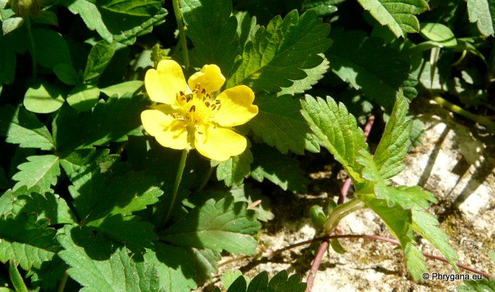
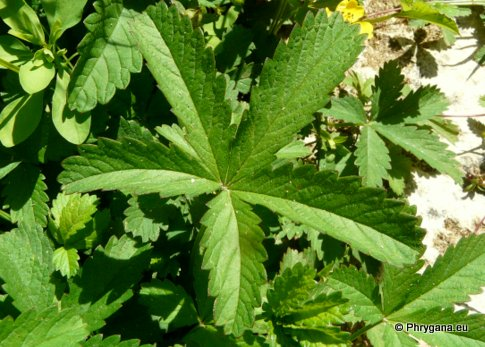
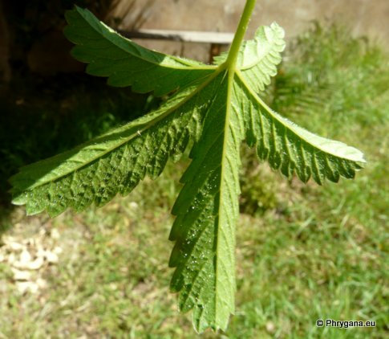
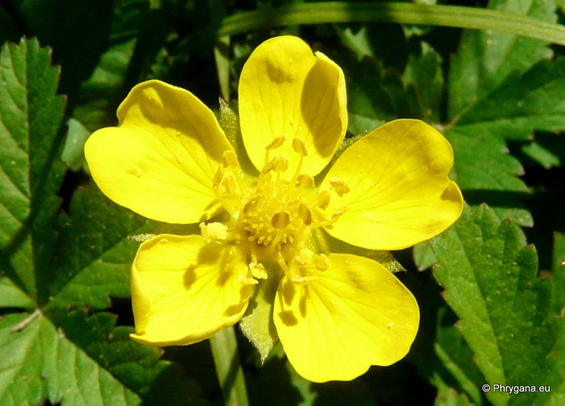
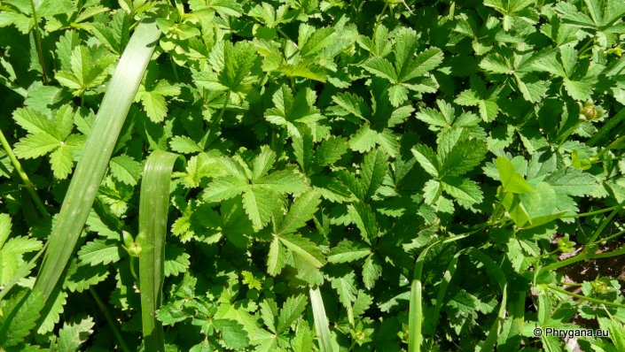

| PHRYGANA | Fauna | Flora | Galles | liste des espèces |
contact -
info - commentaires phrygana1 (at) gmail.com |
| Particularités crétoises | nouveautés | Mines | ressources naturelles |
| Potentilla reptans L. |
| 444 | Flora | ROSACEAE | Potentilla L. |
 Potentilla reptans Rethymno centre-ville 18 avril 2013 |
| la Potentille rampante - Creeping Cinquefoil - Cinquefoglia comune - Cincoenrama - Vijvingerkruid - Kriechendes Fingerkraut - Ποτεντίλλα η έρπουσα | |
| . | |
| Feuilles: alternes, composées à 5(-7) folioles ( 5-70 x 3-25 mm), vert franc, dentées; stipules étroites-elliptiques | |
| Tiges herbacées, longues, couchées-ascendantes, rampantes et radicantes aux noeuds | |
| Fleurs: jaunes, solitaires à l'aisselle des feuilles; couronne 7-11 mm de large; pétales: 5, à bout entaillé; carpelles: 60-120; 5 sépales doublés d'un calicule à lobes elliptiques; étamines: 20 | |
| Fruit: akènes gris brunâtre | |
| Hauteur: 10 - 20 cm | Type biologique: hémicryptophyte à rosette |
| Floraison: avril mai juin juillet août septembre octobre | |
| Altitudes: 0 - 400 m | |
| Statut: Crète: indigène | |
| Biotopes en Crète: terrains frais, forêts rivulaires, pelouses humides, friches et fossés | |
| Distribution: Europe, Afrique du Nord, Asie occidentale | |
| Plante médicinale: les racines ont des propriétés astringeantes et vulnéraires, fébrifiges | |
| Espèce mellifère | |
|

 Potentilla reptans Rethymno centre-ville 18 avril 2013 |
|
 Potentilla reptans Rethymno centre-ville 18 avril 2013 |
|
 Potentilla reptans Rethymno centre-ville 18 avril 2013 |
| 05 mai 2013 |
| © paul fontaine -- © Phrygana.eu 2007 -- 2013 |